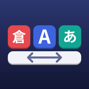

MixBoard
支援
MixBoard 係一個將中文（倉頡、速成、注音、筆劃或者拼音）、英文同日文放埋一齊嘅 iPhone 鍵盤。可以喺空白鍵左右掃轉語言，亦可以用「混合輸入」，打字母就一齊出中文、英文同日文候選字。
點樣加入鍵盤
- 開「設定」→「一般」→「鍵盤」→「鍵盤」
- 撳「新增鍵盤⋯」，喺「第三方鍵盤」揀「MixBoard」
- 打字時長按 🌐，揀「MixBoard」
唔需要開「完整取用權」。
常見問題
點解唔使「完整取用權」？
MixBoard 所有嘢都喺你部 iPhone 入面處理，唔需要上網，所以唔使呢個權限。
點樣轉語言？
喺空白鍵向左或者向右掃。冇字打緊嘅時候，撳候選字欄右邊嘅 ⚙︎ 可以改語言次序、收埋用唔着嘅語言，或者轉用「混合輸入」。
點樣移動游標？
同 iPhone 內置鍵盤一樣：撳住空白鍵，等啲鍵嘅字收埋，再向左或者向右拖。只可以左右移；打緊字（有底線）嗰陣唔會移。
點樣揀中文打法？
冇字打緊嘅時候撳 ⚙︎，喺「中文」嗰行揀倉頡、速成、注音、筆劃或者拼音。
唔記得某個倉頡字根點算？
用「重」（Z 鍵）頂住嗰個字根。
注音點打？
打完注音符號再打聲調，一聲撳空白鍵。聲調可以唔打；連打幾個音節，可以一次過出成個詞（ㄋㄧˇㄏㄠˇ → 你好）。
筆劃點打？
跟寫字嘅次序撳 一 丨 丿 丶 乛，通常頭幾劃就夠，之後喺候選字度揀返個字。唔肯定嗰一劃可以用 ＊ 代替。
拼音點打？
同 iPhone 內置嘅繁體拼音差唔多：唔使打聲調，成句打都得，例如 wojintianhenmang 出「我今天很忙」；揀咗前面嘅字詞，後面會留低繼續揀。只打聲母都得（nh 出「你好」），v 代表 ü（lv 出「綠」）。打緊嘅時候，「，」掣會打 ' 分開音節（xi'an 出「西安」）。字詞來自台灣嘅詞庫，所以有啲係台灣寫法；揀過嘅字詞下次會排先。
可唔可以打簡體字？
可以。喺 ⚙︎ 頂部揀「簡」，就用拼音打簡體字，掃空白鍵轉語言同混合輸入都得；簡體只有拼音，用大陸用詞同字頻。轉返「繁」，原本揀開嘅打法會返返嚟。
混合輸入可唔可以用注音或者筆劃？
唔得。混合輸入係靠字母鍵分辨語言，而注音同筆劃有自己嘅鍵位，所以混合輸入另外揀倉頡、速成或者拼音打中文。「掃空白鍵轉語言」就照用你揀嘅注音或者筆劃。揀咗拼音嘅話，完整音節會出中文（nihao 出「你好」），淨係聲母就保留字母（nh）。
想打英文字母但鍵盤係倉頡或者日文？
喺個鍵向上掃，或者長按佢。
打賞係咩？
MixBoard 所有功能都係免費。主頁最底可以請開發者飲杯咖啡，打賞唔會解鎖任何功能，付款由 Apple 處理。
刪除 App 會點？
MixBoard 學到嘅字同你嘅設定只存喺你部 iPhone，刪除 App 就會一齊刪走。
聯絡
有問題或者建議，歡迎電郵：vclho@ymail.com
支持
MixBoard 是一个把中文（简体拼音，以及繁体的倉頡、速成、注音、筆劃或拼音）、英文和日文放在一起的 iPhone 键盘。可以在空格键上左右滑切换语言，也可以用“混合输入”：打字母就同时出中文、英文和日文候选。
添加键盘
- 打开“设置”→“通用”→“键盘”→“键盘”
- 轻点“添加新键盘…”，在“第三方键盘”中选择“MixBoard”
- 打字时按住 🌐，选择“MixBoard”
不需要开启“完全访问”。
常见问题
怎样打简体字？
没有输入时，轻点候选栏右边的 ⚙︎，在顶部选“簡”，就用拼音输入简体字，滑动切换和混合输入都可以。简体只有拼音，使用中国大陆的用词和词频。切回“繁”，原来选的输入方式会恢复。
拼音怎么打？
和 iPhone 自带的拼音差不多：不用打声调，整句输入也可以，例如 wojintianhenmang 出“我今天很忙”；选了前面的字词，后面的拼音会留下继续选。只打声母也可以（nh 出“你好”），v 代表 ü（lv 出“绿”）。输入时，“，”键会输入 ' 来分隔音节（xi'an 出“西安”）。选过的字词下次会排在前面。
为什么不需要“完全访问”？
MixBoard 所有处理都在 iPhone 上完成，不会联网，所以不需要。
怎样切换语言？
在空格键上向左或向右滑。没有输入时，轻点候选栏右边的 ⚙︎，可以调整语言顺序、关闭不用的语言，或者改用“混合输入”。
怎样移动光标？
和 iPhone 自带键盘一样：按住空格键，键上的字消失后，向左或向右拖动。只能左右移动；正在输入（有下划线）时不会移动。
混合输入可以用注音或笔画吗？
不可以。混合输入靠字母键分辨语言，而注音和笔画有自己的键位，所以混合输入另外选仓颉、速成或拼音输入中文（选“簡”时就是简体拼音）。选了拼音的话，完整音节会出中文（nihao 出“你好”），只有声母就保留字母（nh）。
在仓颉或日文键盘上怎样打英文字母？
在键上向上滑，或者长按。
打赏是什么？
MixBoard 的所有功能都免费。在主页面最下方可以请开发者喝杯咖啡；打赏不会解锁任何功能，付款由 Apple 处理。
删除 App 会怎样？
MixBoard 学到的字词和你的设置只保存在你的 iPhone 上，会随 App 一起删除。
联系
欢迎提出问题或建议：vclho@ymail.com
Support
MixBoard is an iPhone keyboard that puts Chinese (Cangjie, Quick, Zhuyin, Stroke or Pinyin), English and Japanese together. Swipe the space bar to switch languages, or use Mixed input: type letters and get Chinese, English and Japanese candidates at once.
Add the keyboard
- Open Settings → General → Keyboard → Keyboards
- Tap “Add New Keyboard…” and, under Third-Party Keyboards, choose “MixBoard”
- While typing, touch and hold 🌐 and choose “MixBoard”
Full Access is not needed.
Questions
Why no Full Access?
MixBoard does everything on your iPhone and never goes online, so it doesn't need it.
How do I switch languages?
Swipe the space bar left or right. When nothing is being typed, tap ⚙︎ at the right of the candidate bar to reorder languages, turn off the ones you don't use, or switch to Mixed input.
How do I move the cursor?
As on the iPhone's own keyboard: touch and hold the space bar, and once the keys go blank, slide left or right. It moves left and right only, and stays put while something underlined is being typed.
How do I choose how to type Chinese?
When nothing is being typed, tap ⚙︎ and choose 倉頡 (Cangjie), 速成 (Quick), 注音 (Zhuyin), 筆劃 (Stroke) or 拼音 (Pinyin) on the 中文 (Chinese) row.
I forgot a Cangjie radical.
Put 重 (the Z key) in its place.
How do I type with Zhuyin?
Type the symbols, then the tone; the space bar types the first tone. Tones are optional, and several syllables typed together give a whole word (ㄋㄧˇㄏㄠˇ → 你好).
How do I type with Stroke?
Tap 一 丨 丿 丶 乛 in the order you write the character. A few strokes are usually enough: then pick the character from the candidates. Put ＊ for a stroke you are not sure of.
How do I type with Pinyin?
Much as with the iPhone's own Traditional Pinyin: no tones, and a whole sentence works (wojintianhenmang gives 我今天很忙); pick a word for the start and the rest stays to go on with. Initials are enough (nh gives 你好), and v is ü (lv gives 綠). While typing, the ，key types ' to split syllables (xi'an gives 西安). The words come from a Taiwanese word list, so some are as written in Taiwan; a word you pick comes first next time.
Can I type Simplified Chinese?
Yes. Choose 簡 at the top of ⚙︎ to type Simplified Chinese with Pinyin, in Swipe to switch and in Mixed input; Simplified has Pinyin only, with mainland words and frequencies. Back on 繁, your other choices come back.
Can Mixed input use Zhuyin or Stroke?
No. Mixed input tells the languages apart by the letter keys, and Zhuyin and Stroke have keys of their own, so Mixed input types Chinese by Cangjie, Quick or Pinyin, picked on its own. With Pinyin, whole syllables become Chinese (nihao gives 你好), and initials alone stay letters (nh). Swipe to switch still uses the Zhuyin or Stroke you picked.
How do I type an English letter on the Cangjie or Japanese layout?
Swipe up on the key, or touch and hold it.
What is the tip jar?
Every feature of MixBoard is free. At the bottom of the main page you can buy the developer a coffee; a tip unlocks nothing, and Apple handles the payment.
What happens if I delete the app?
The words MixBoard has learned and your settings live only on your iPhone, and are deleted with the app.
Contact
Questions or ideas are welcome: vclho@ymail.com
サポート
MixBoard は、中国語（倉頡・速成・注音・筆画・拼音）・英語・日本語をひとつにまとめた iPhone 用キーボードです。スペースバーをスワイプして言語を切り替えるか、「ミックス入力」でアルファベットを打つだけで中国語・英語・日本語の候補をまとめて表示できます。
キーボードの追加
- 「設定」→「一般」→「キーボード」→「キーボード」を開く
- 「新しいキーボードを追加…」をタップし、「他社製キーボード」から「MixBoard」を選択
- 入力中に 🌐 を長押しして「MixBoard」を選択
フルアクセスは不要です。
よくある質問
なぜフルアクセスが不要なのですか？
MixBoard はすべて iPhone の中で処理し、インターネットに接続しないためです。
言語の切り替え方は？
スペースバーを左右にスワイプします。入力していないときに候補バー右端の ⚙︎ をタップすると、言語の並べ替え、使わない言語のオフ、ミックス入力への切り替えができます。
カーソルの移動は？
iPhone 標準キーボードと同じく、スペースバーを長押しし、キーの文字が消えたら左右にドラッグします。動かせるのは左右のみで、入力中（下線がある間）は動きません。
日本語入力の方式は？
ローマ字入力と 12 キーのフリック入力から選べます。
中国語入力の方式は？
入力していないときに ⚙︎ をタップし、「中国語」の行で倉頡・速成・注音・筆画・拼音から選べます。
拼音はどう打ちますか？
iPhone の繁体字拼音とほぼ同じです。声調は不要で、文をまとめて打てます（wojintianhenmang で「我今天很忙」）。先頭の語を選ぶと、残りはそのまま続けて選べます。声母だけでも打てます（nh で「你好」）。ü は v で打ちます（lv で「綠」）。入力中は「，」キーで ' を打って音節を区切れます（xi'an で「西安」）。語彙は台湾の辞書によるため、台湾式の語もあります。選んだ語は次から先頭に出ます。
簡体字は打てますか？
打てます。⚙︎ の上で「簡」を選ぶと、拼音で簡体字を入力できます（スワイプ切替でもミックス入力でも）。簡体字は拼音のみで、中国大陸の語彙と頻度を使います。「繁」に戻すと、ほかの選択も元に戻ります。
ミックス入力で注音や筆画は使えますか？
使えません。ミックス入力は英字キーで言語を見分けますが、注音と筆画は専用のキーで打つため、ミックス入力の中国語は倉頡・速成・拼音から別に選びます。拼音の場合、音節がそろうと中国語になり（nihao で「你好」）、声母だけなら英字のままです（nh）。スワイプで切り替えるときは、選んだ注音や筆画がそのまま使えます。
チップ（応援）とは？
MixBoard の機能はすべて無料です。メイン画面の一番下から開発者にコーヒーをおごることができます。応援で使える機能が増えることはなく、支払いは Apple が処理します。
アプリを削除するとどうなりますか？
学習した単語や設定は iPhone の中だけに保存されており、アプリと一緒に削除されます。
お問い合わせ
ご質問やご要望はこちらへ：vclho@ymail.com